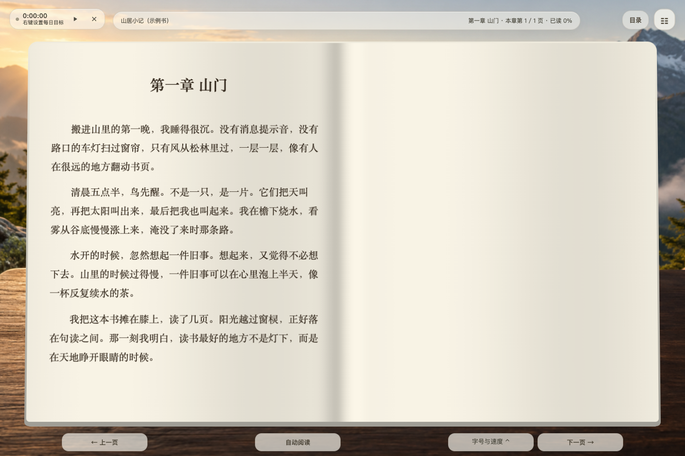
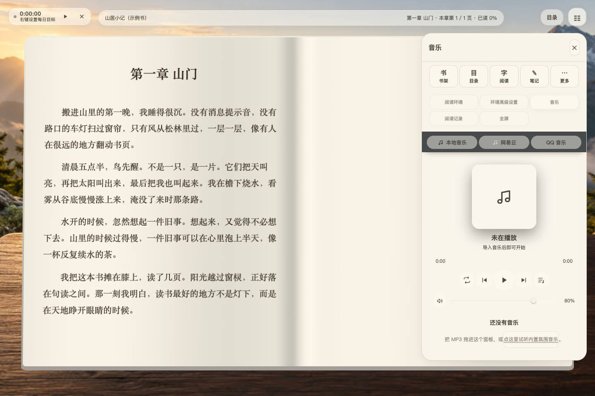

EPUB / TXT / PDF 文字导入
拖入或选择可重排 EPUB、TXT、文字型 PDF。TXT 识别 UTF-8、UTF-16、GB18030 / GBK、Big5，结合文件名提取书名作者并自动分章；PDF 按页面坐标重组文字。长文件转换提供进度与取消入口。
查看实现 ↗LOCAL BOOKS · QUIET SCENES
本地电子书阅读工具 · v1.9.4
沉浸阅读器是 SJT-bright 开发的本地电子书阅读工具，支持 EPUB、TXT 和文字型 PDF，结合立体双页、雨窗与雪景、氛围音乐、划线笔记和阅读记录。无需账号，个人书籍与记录保存在本机。
本机运行 · 无需读书器账号 · macOS 实测 · Windows / Linux 提供启动入口

项目将电子书阅读、可定制环境和本地阅读积累放在同一个界面。EPUB / TXT 进入可调排版的书页，划线可回到原文，阅读目标与热力图帮助回顾自己的习惯。
拖入或选择可重排 EPUB、TXT、文字型 PDF。TXT 识别 UTF-8、UTF-16、GB18030 / GBK、Big5，结合文件名提取书名作者并自动分章；PDF 按页面坐标重组文字。长文件转换提供进度与取消入口。
查看实现 ↗保留原书封面，无封面时生成书名封面；按书名或作者搜索，按最近打开、导入时间、书名、进度排序。可从书架查看目录和各章进度，继续上次阅读，或删除书籍。
查看实现 ↗书桌与风景中的浅色双页带柔和书缝、参数化纸面受光和翻页动效；正文仍是可以选中、搜索、划线的真实文字。支持左右翻页、连续滚动、宋体 / 黑体 / 楷体、字号、行距、页宽和排版密度调整。
查看实现 ↗目录可过滤章节，展开页码并直接跳章或跳页，显示每章已读比例；鼠标悬停可展开，触屏和键盘也可操作。支持中英文全书搜索、返回跳转前位置、关闭重开恢复进度；进度归零保留笔记和书签。
查看实现 ↗提供慢 / 适中 / 快预设，以及滚动速度、每页停留、章末停留的细调。自动阅读联动计时；手动翻页时重置等待时间后继续，离开页面或切书时暂停。全屏、隐藏工具和快捷键帮助专注阅读。
查看实现 ↗
ATMOSPHERE, AT YOUR PACE
内置群山黎明、极光夜空、双色流体、花园、草原、森林、湖畔、雨庭、雪原，以及书桌、山谷、咖啡厅、山崖四种立体书环境。可上传、命名和删除自己的图片或静音视频；固定一张、按早晚时段或按分钟轮换，并设置切换渐变。
内置六首原创程序合成氛围音乐；可导入本地 MP3 / WAV / OGG / M4A 等，排序播放列表、拖动进度、调音量，选择列表循环、单曲循环、顺序或随机播放，设置淡入淡出及睡眠定时。另有雨声、落雪、海浪、山风、溪流、篝火、虫鸣、白 / 粉 / 棕噪十种环境声；网易云与 QQ 音乐通过官方外链或官方打开入口使用。
选中文字即可划线或写想法，笔记按书保存，可编辑心得、回到对应原文，收藏当前位置为书签。划线与书签分区展示，删除支持撤销；单本书的划线、心得和书签可导出为 Markdown。
查看实现 ↗记录今日与累计阅读时长、连续天数、最近阅读和按累计时长解锁的成就。16 周日期宫格支持鼠标、键盘和触屏查看完整日期与分钟数；每日目标显示剩余时间或达标状态。页面转入后台时暂停计时，历史可清空。
查看实现 ↗浏览器 IndexedDB 与本机 SQLite 镜像保存资料；完整备份包含书籍、背景、音乐、笔记、位置与设置。恢复时可合并或覆盖，并先下载恢复前快照。可独立运行，也可通过本机接口及书籍 / 笔记链接与配套个人积累库联动。
查看实现 ↗需要现代 Chrome / Edge 和 Node.js 或 Python，无需 npm 安装。 完整运行说明 ↗
1.9.4 源码通过 303 项 Node 逻辑检查。目录悬停与页码交互有隔离浏览器及 macOS 实际窗口记录；Windows / Linux 尚未分别实机验收。截图来自隔离样例，不使用个人资料。
验证范围 · 许可范围 · 完整功能 · 格式、隐私与常见问题